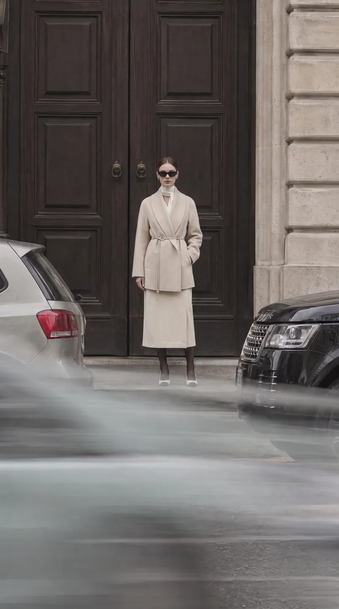
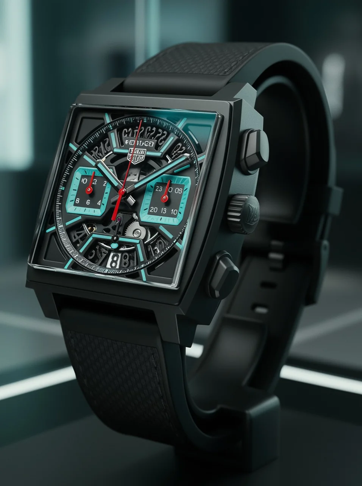

자체·가상 브랜드 작업
KRIS W · 2027 S/S 가상 런웨이

KRIS W 컬렉션의 실루엣과 런웨이 분위기를 보여주는 AI 패션쇼 포트폴리오입니다. 외부 고객의 납품 프로젝트로 표기하지 않습니다.
컬렉션과 모델의 움직임을 영상으로 소개하는 사례입니다. 프로젝트별 세부 공정과 실제 문제 해결 기록은 추가 확인이 필요해 성과로 제시하지 않습니다.
관련 서비스: AI 패션쇼·가상 런웨이
홈 / AI 영상 제작 사례와 담당 범위
GRaY D. Lab · AI VIDEO PRODUCTION STUDIO
납품 프로젝트, 시안·프리뷰, 자체·가상 브랜드 작업을 구분해 소개합니다.
자체·가상 브랜드 작업
KRIS W 컬렉션의 실루엣과 런웨이 분위기를 보여주는 AI 패션쇼 포트폴리오입니다. 외부 고객의 납품 프로젝트로 표기하지 않습니다.
컬렉션과 모델의 움직임을 영상으로 소개하는 사례입니다. 프로젝트별 세부 공정과 실제 문제 해결 기록은 추가 확인이 필요해 성과로 제시하지 않습니다.
관련 서비스: AI 패션쇼·가상 런웨이
자체·가상 컬렉션 포트폴리오

가상 컬렉션의 착장과 모델 비주얼을 소개하는 룩북 영상입니다. 화보·룩북의 화면 구성과 브랜드 분위기를 검토할 수 있습니다.
개별 의상 재현 기준이나 세부 후반 작업 범위는 이 공개 소개만으로 단정하지 않습니다. 실제 제품을 대상으로 의뢰할 때는 별도의 자료와 검수 기준을 확인합니다.
관련 서비스: AI 패션 화보·룩북
시안·프리뷰 / 최종 납품과 구분

시즌 캠페인의 콘셉트와 영상 흐름을 검토하기 위한 프리뷰입니다. 그레이디랩이 콘셉트 기획, 인터랙티브 스토리보드 설계, AI 씬 비주얼 생성, 컷 편집과 시퀀스 구조화를 담당했습니다.
다수의 룩과 빠른 장면 전환 속에서 의상 디테일과 톤의 일관성을 유지하는 것이 과제였습니다. 타임라인·에셋이 연동되는 HTML 스토리보드를 구축해 피드백과 장면 흐름을 검토했습니다.
결과물은 캠페인 영상 기획안과 프리뷰입니다. 상업 패션 MD 관점의 디테일을 검토했으며, 최종 캠페인 납품이나 공개 집행 성과로 표현하지 않습니다.
관련 서비스: 브랜드 필름·AI 광고
옥외 전광판용 브랜드 영상

광화문 KT스퀘어 대형 전광판을 위한 브랜드 영상입니다. 그레이디랩이 옥외 미디어월 맞춤 연출 기획, AI 비주얼 생성, 영상 편집과 마스터링을 총괄했습니다.
대형 화면의 확대 품질과 주야간 야외 시인성이 과제였습니다. 정밀 업스케일링과 고대비 컬러 그레이딩을 적용해 의상 텍스처와 브랜드 무드가 읽히도록 구성했습니다.
OOH 매체용 영상 제작 사례이며, 매체 구매나 송출 운영까지 담당했다는 의미는 아닙니다. 해상도와 매체별 파일 규격은 신규 프로젝트 상담에서 별도로 확인합니다.
관련 서비스: 리테일·OOH 영상
제품 영상 / 패션쇼 프로젝트와 별도

신세계 백화점 관련 럭셔리 시계 영상 프로젝트입니다. 그레이디랩이 콘셉트 기획, AI 이미지·영상 생성, 후반 컷 편집과 마스터링까지 전 공정을 총괄했습니다.
제품 중심의 비주얼 제작 사례로 소개합니다. 패션쇼 5편·디지털 매거진 프로젝트와는 별도이며, 해당 프로젝트의 과제·결과를 이 영상의 성과로 옮겨 쓰지 않습니다.
관련 서비스: 브랜드 필름·AI 광고
백화점 미디어월·모바일용 납품
신세계 사계·타임스퀘어 패션 필름 및 디지털 매거진 프로젝트입니다. 그레이디랩이 콘셉트 기획, 스토리보드 연출, AI 이미지·영상 생성, 후반 편집과 BGM 마스터링을 총괄했습니다.
백화점 미디어 환경에 맞는 고급스러운 톤과 자연스러운 런웨이 모션이 과제였습니다. 워킹의 동적 일관성과 조명 무드를 정밀하게 제어하는 방식으로 제작했습니다.
총 5편의 패션쇼 영상과 디지털 매거진 연계 에셋을 완성하고, 백화점 미디어월과 모바일 뷰에 맞춰 납품했습니다. 공개 영상 링크는 별도 확인 중이며, 시계 영상을 이 프로젝트의 영상으로 연결하지 않습니다.
관련 서비스: AI 패션쇼·가상 런웨이